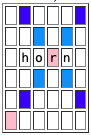
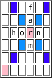
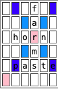
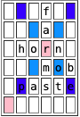
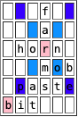

Scrabble Rules
The basic objective of Scrabble is to play tiles marked with letters on a 15x15 grid to form words. After the initial word is played, players take turns adding words to existing letters.
The board looks like this:
The colours mark the Premium Squares and letters or words that played on those squares are worth more points. Each tile has a letter and a number on it. The letter is used to construct the words and the number indicates its point value. These are the letter frequencies and the point values:

The word list is available in two formats:

- zipped (688K)
- uncompressed (2.8M)
It contains 267751 words. This is the SOWPODS word list. I found it online here.
Rules
Games only have two players. Each match has two games, one with each player playing first.
Players initially draw 7 tiles each and place them on their rack.
The first player combines two or more of his or her letters to form a word and places it on the board to read either across or down with one letter on the center square. (Diagonal words are not allowed.) After playing a word, the player receives replacement letters, one for each letter played.
Following the first turn, players alternate. Each plays a series of tiles forming a word (possibly more than one word, as below) and then draws new tiles. Always keep 7 tiles on each rack, unless there are not enough tiles left.
The letters placed in a single turn must all be in a single horizontal row or in a single vertical column, and the letters placed (plus letters already on the board) must form a single word from the dictionary, with no gaps. Each new word must connect to the existing words, in one of the following ways:
- Adding one or more letters to a word or letters already on the board.
- Placing a word at right angles to a word already on the board. The new word must use one of the letters already on the board or must add a letter to one of the words on the board.
- Placing a complete word parallel to a word already played so that adjacent letters also form complete words.
Any new words formed by these connections must also be in the dictionary.
Each of the two blank tiles may be used as any letter. When playing a blank, you must state which letter it represents. It remains that letter for the rest of the game.
You may use a turn to exchange all, some, or none of the letters. To do this, place your discarded letter(s) facedown. Draw the same number of letters from the pool of remaining letters, and then mix your discarded letter(s) into the pool. This ends your turn. You may not exchange more tiles from your rack than are in the pool (or are in your rack, of course), but there is no other limit on how many tiles you may exchange.
The game ends when:
- all of the letters are either in the player's racks or on the board, and one player uses his or her last letter or
- both players exchange some number of tiles twice in a row (for a total of four exchanges).
Scoring
The score for each turn is the sum of the letter values in each word(s) formed or modified on that turn, plus the additional points obtained from placing letters on Premium Squares.
Premium Letter Squares: A light blue square doubles the score of a letter placed on it; a dark blue square triples the letter score.
Premium Word Squares: The score for an entire word is doubled when one of its letters is placed on a pink square; it is tripled when one of its letters is placed on a red square. Include premiums for double or triple letter values, if any, before doubling or tripling the word score.
If a word is formed that covers two premium word squares, the score is doubled and then re-doubled (4 times the letter count), or tripled and then re-tripled (9 times the letter count).
Letter and word premiums count only on the turn in which they are played. On later turns, letters already played on premium squares count at face value.
When a blank tile is played on a pink or red square, the value of the word is doubled or tripled, even though the blank itself has no score value.
When two or more words are formed in the same play, each is scored. The common letter is counted (with full premium value, if any) for each word.
If you play seven tiles on a turn, it's called a Bingo. You score an additional 50 points after otherwise totaling your score for the turn.
Unplayed Letters: When the game ends, each player's score is reduced by the sum of his or her unplayed letters. In addition, if a player has used all of his or her letters, the sum of the other players' unplayed letters is added to that player's score.
The player with the highest final score wins the game. In case of a tie, the player with the highest score before adding or deducting unplayed letters wins.
If a match has one winner and one loser, the player that scored more points (combined in both games) wins the match. If that number is the same for the two players, the match is a tie.
Scoring Example
As an example, consider the following sequence of moves, starting from an empty board (only showing the middle section of the board).
- For this first move, add up the point values of the letters, 4+1+1+1=7 and then double that, since the letter r is on a double-word score (remember, the first play must always be there). 
- The second word, farm, shares the r from the first word, but the double word cell is considered "used up" because the r was not played this turn. Thus, the score is only the point values of the letters, added up: 4+1+1+3 = 9 
- Paste lands on two triple-letter scores, so the values of the p and the e are tripled: (3+3+3)+1+1+1+(1+1+1) = 15, but the word farms is a new word, so the entire value of that word is added in as well 4+1+1+3+1=10, for a total of 25. 
- In this example, the double letter counts twice, since it is used simultaneously in two different words, not (1+(1+1)+1=4) and mob (3+(1+1)+3=8). Counting be (3+1=4) the total for this move is 16. 
- This play makes three words bit (3+1+1=5), which is doubled, and pi (3+1=4) and at (1+1=2) for a total of 16. 